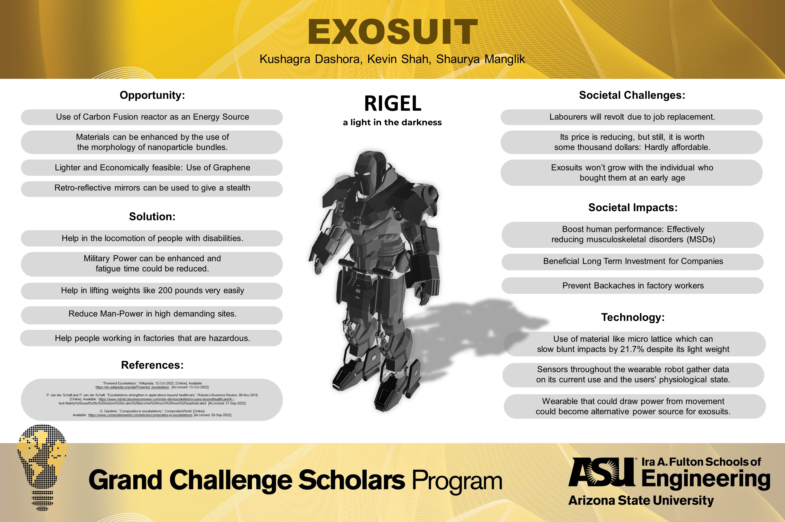

Multidisciplinary Competency
Interdisciplinary Learning
FSE 150: Introduction to Grand Challenges
During my freshman year in Fall 2022, FSE 150 served as my formal gateway into the Grand Challenges Scholars Program. This course fundamentally shifted my academic mindset, teaching me to understand how engineering solutions carry wide-ranging, interdisciplinary implications that echo throughout society. Rather than focusing merely on math and physics, we spent the semester exploring the historical context, cultural impacts, and the profound ethical weight of emerging technologies.
A particularly meaningful aspect of this course was a major project where I was tasked with designing a market-ready product that actively tackled a specific grand challenge. I took a central role in pitching and ideating the concept of a highly versatile, personalized exosuit designed to address two entirely distinct themes: Health and Security. From a health perspective, I conceptualized the mechanics of how the exosuit could assist amputees and individuals with mobility impairments, figuring out how it could help them regain their physical autonomy. Simultaneously, I explored the security standpoint, helping design the suit with military applications in mind to explicitly reduce physical fatigue and mitigate long-term injury among active-duty soldiers.
This project was my first true exposure to interdisciplinary problem-solving. It pushed me to look beyond current technological constraints and methodically approach complex, open-ended challenges—teaching me how to think like a professional engineer rather than just a student. Furthermore, the course was incredibly valuable because it familiarized me with the myriad of different resources, fabrication labs, and innovation programs ASU has to offer, establishing a vital foundation for my college career. By focusing on an exosuit that actively alleviates physical limitations and restores autonomy for amputees, my work on this project forged a direct, personal connection to my Joy of Living theme. It cemented my long-term passion for building tangible tools that fundamentally restore physical independence and enhance the daily human experience.


HST 318: History of Engineering
In Spring 2026, I completed HST 318, a transformative course that encouraged me to develop a true systems-thinking mindset. We transcended traditional technical boundaries to investigate how engineering has historically intersected with public policy, human behavior, and global economics. To explore this, we completed several impactful assignments. For instance, I wrote an analytical case study on the 1984 Bhopal Gas Tragedy. I examined how the disaster was not a failure of mathematical calculations—the safety systems were theoretically sound—but rather a catastrophic failure of human judgment, corporate negligence, and reckless cost-cutting. This deeply impactful assignment taught me that the ethical responsibility of an engineer extends far beyond correct equations; we must constantly advocate for inherently safer designs and prioritize human life over corporate profit.
Another standout experience in this course was writing my final essay, "Pragmatic Art," which required a deep dissection of Bill Hammack's book The Things We Make. Before taking this class, I held the rigid belief that engineering was strictly applied science—that if I could just grasp the core principles of physics, I could seamlessly apply them to create perfect objects. However, analyzing Hammack’s book completely dismantled this notion. I learned about how medieval cathedral builders relied heavily on heuristics, geometry, and simple rules of thumb rather than absolute scientific truths. Furthermore, learning that the steam engine was developed long before the science of thermodynamics could even explain how it worked fundamentally shifted my perspective on innovation.
This realization was incredibly liberating for my academic and professional career. It taught me that engineering is fundamentally an iterative process of trial, error, and optimizing competing constraints—much like how my own project teams have had to iteratively adjust physical robotic hardware after sensors unexpectedly failed in the lab. Developing this interdisciplinary systems perspective has taught me to abandon the immense pressure of achieving theoretical perfection on the very first try. Instead, I now embrace failure and collaborative problem-solving as highly necessary tools for innovation. This resilient mindset directly supports my Joy of Living theme. Developing life-enhancing assistive technologies rarely follows a perfect scientific formula; it requires constant, empathetic iteration with the end-users and a deep ethical commitment to their safety—lessons permanently ingrained in me by studying both the Bhopal tragedy and historical engineering methods.